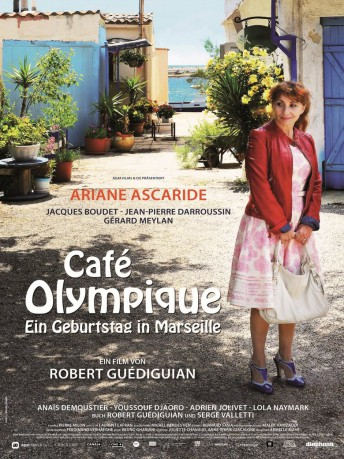

gesehen am 26.10.2015
gesehen am 26.10.2015Alternativ: Ariane's Thread (Englischer Titel) gesehen am 26.10.2015
 
 IMDB-Wertung: 5.7 / 10
IMDB-Wertung: 5.7 / 10  Metascore:
Metascore: 
Ariane, eine Frau in den besten Jahren, sitzt an ihrem Geburtstag allein zu Hause, Kinder, Ehemann und Freunde sagen telefonisch ab. Frustriert fährt sie mit dem Auto nach Marseille, um sich am Meer zu erholen. Zufällig landet sie im Café Olympique, allerdings ohne Bares. Bald hilft sie dort als Kellnerin aus, schläft auf einem Boot und bricht sogar mit neuen Freunden in ein Museum ein. Sie fühlt sich wie Alice im Wunderland als sich endlich ihr großer Traum erfüllt und sie auf der Bühne vor Publikum singt.
Jahr: 2014
Dauer: 92 Minuten
FSK: 6
Land: Frankreich Studio: Schwarz/Weiss FilmverleihTonspuren:
Untertitel:
Auflösung: 1080p (1920x1040) Größe: 5990 MB
Genre: Drama
Regisseur: Robert Guédiguian
Drehbuch: Robert Guédiguian, Serge Valletti
Soundtrack: Eduardo Makaroff, Christoph Müller
Darsteller:
 Jean-Pierre Darroussin als le chauffeur de taxi / Le metteur en scène
Jean-Pierre Darroussin als le chauffeur de taxi / Le metteur en scène Anaïs Demoustier als Martine / La comédienne
Anaïs Demoustier als Martine / La comédienne Ariane Ascaride als Ariane
Ariane Ascaride als Ariane Jacques Boudet als Jacques
Jacques Boudet als JacquesDatei: X:\2014(A-F)\Café Olympique - Ein Geburtstag in Marseille (2014, FSK6, 1920x1040).mkv seit 23.09.2015
Festplatte: HD 2013(I-Z)-2014(A-Z)
 Es gibt insgesamt 119 Filme in der Gruppe '2014(A-F)'
Es gibt insgesamt 119 Filme in der Gruppe '2014(A-F)'